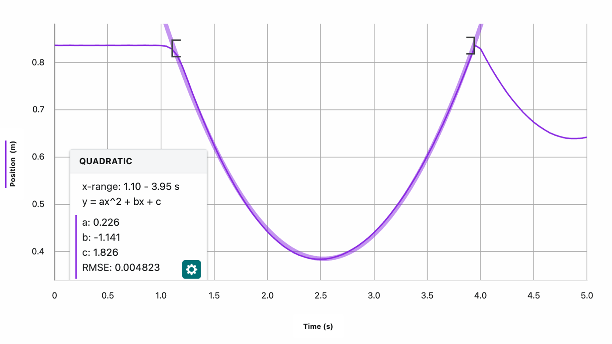
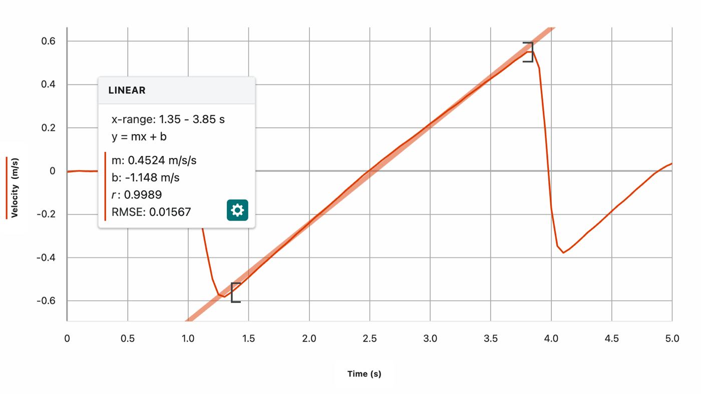
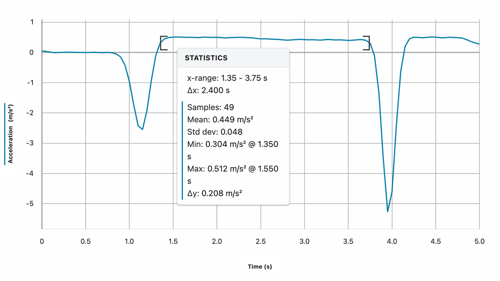
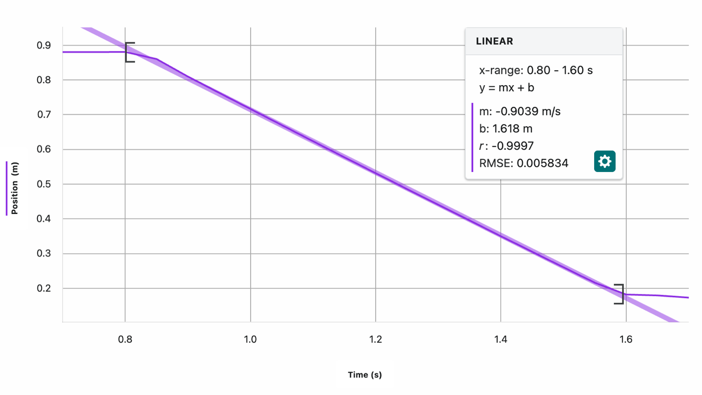
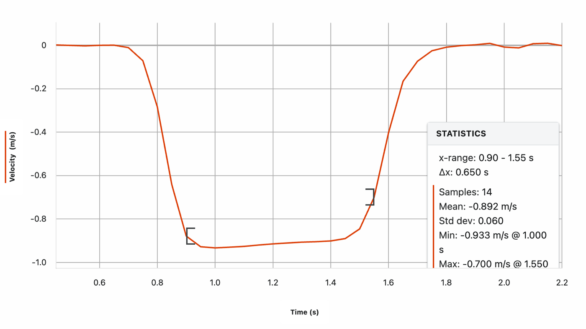
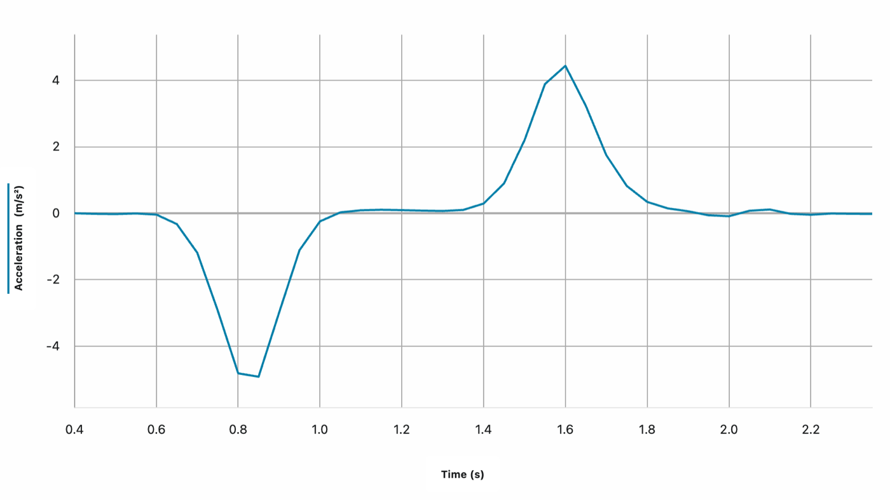
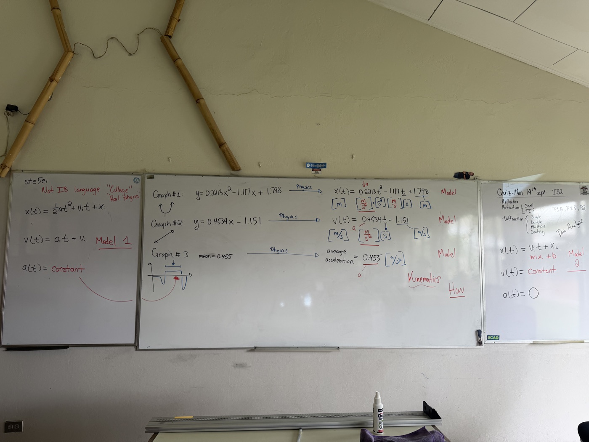

Two classes, one investigation. First a self-guided lab with a motion sensor and a cart on a ramp, generating three graphs. Then a lecture where those same three graphs become the equations of motion, built from data instead of handed down on a formula sheet.
Working in groups of three or four, each station had a cart on an inclined ramp with a motion sensor at one end. The sensor sends out a sonar pulse and reads position from how long the echo takes to come back, which is worth knowing before you look at the graphs: what you're seeing is a distance from the sensor, not a distance along the ramp measured some other way. Using the Vernier cart-and-track kit and Graphical Analysis on a LabQuest, running the Cart on a Ramp activity, each group gave the cart a push toward the sensor and let it record the whole trip: the cart decelerates, comes to rest for an instant at the top of its travel, then rolls back down by itself, speeding up the whole way. That one push-and-return produces three graphs of the same five seconds, position, velocity, and acceleration.
Graphical Analysis fits a curve to any stretch of a graph and reads the parameters straight off it. The fits below cover the "rolling on its own" section of each graph, the part after the push and before a hand touches the cart again to catch it, roughly 1.35 to 3.85 seconds:



Outside that window, the acceleration trace spikes hard, down to around −2.5 m/s² at the push and down again to around −5 m/s² where a hand catches the cart at the bottom. Those spikes are real, but they're excluded from the fits on purpose: the push and the catch are a hand doing something to the cart, not the cart moving under gravity by itself.
Those three fits are the starting point, exactly as Graphical Analysis reported them: two curves in plain math, y = ax² + bx + c and y = mx + b, plus the mean acceleration. That's not IB language yet, it's just what a curve fit gives you, before any physics is attached to the letters.
With the units settled, the actual sizes of the numbers become worth comparing. The quadratic's coefficient is just about half the line's slope: \(2 \times 0.226 = 0.452\), against a measured slope of 0.4524. That factor of two is where the \(\tfrac{1}{2}\) in \(\tfrac{1}{2}at^2\) comes from, read straight off two independent graphs of the same five seconds. There's a third number to check it against: the acceleration graph's own mean, 0.449 m/s², measured directly rather than inferred from a fit. Three separate graphs, three separate routes to the same acceleration, agreeing to within a couple percent of each other. That agreement is what justifies treating the acceleration as constant over this interval, and it's why \(x(t) = \tfrac{1}{2}at^2 + v_it + x_i\) is the right model here.
This isn't the only way to arrive at that equation. IB doesn't require calculus for this, the graphs and the units are enough to get there, but for anyone who already knows it, constant acceleration integrates directly into both equations:
\[v(t) = \int a(t)\,dt = \int a\,dt = at + v_i\]
\[x(t) = \int v(t)\,dt = \int (at + v_i)\,dt = \tfrac{1}{2}at^2 + v_it + x_i\]
Same equation, the \(\tfrac{1}{2}\) falling out of the power rule instead of out of a comparison between two graphs. It's worth seeing that this route exists and lands in the same place, even for a course that doesn't ask for it.
\(a = 0.452\ \mathrm{m/s^2}\) is not a universal constant. It's the acceleration of this cart, on this ramp, at this incline, and it would change if the incline changed. What does generalize is the form of the equation, \(x(t) = \tfrac{1}{2}at^2 + v_it + x_i\), and that form is only as good as the assumptions behind it: that the acceleration really is constant over the interval being modeled, that the motion is confined to one dimension, and that whatever forces aren't gravity along the ramp, friction, air resistance, are small enough to ignore.
That's the actual claim being made whenever a model like this is used: not "this equation is true," but "under these specific conditions, this equation describes what happens well enough to be useful." Knowing what those conditions are, and being able to say when they stop holding, is as much a part of the physics as the equation itself.
The same cart has a spring-loaded plunger built into one end. Compressed against a wall at the end of the track and released, it fires the cart off at a roughly constant speed, caught by hand at the other end, giving a second set of graphs to compare against the ramp run.



Here the position graph is a straight line, not a curve, which is the whole point of the comparison: no curvature means no acceleration. The acceleration trace agrees, sitting near zero for the entire middle stretch, except for two sharp transients bracketing it, a dip to about −4.8 m/s² where the spring fires and a spike to about +4.4 m/s² where the hand stops the cart. Same pattern as the ramp run: the push and the catch are excluded from the model, because they're not the motion being modeled.
This is Model 2, written the same way as the first: y = mx + b in math, translated to \(x(t) = vt + x_i\) in physics, with \(v(t)\) constant and \(a(t) = 0\). Placed side by side, Model 1 for the ramp and Model 2 for the launched cart show that "constant acceleration" and "constant velocity" are two versions of the same kind of equation, one with the quadratic term and one without it.
The last step is switching to the notation the exam uses. \(x(t)\) becomes \(s\), \(v_i\) becomes \(u\), and the equations get renamed SUVAT after their five letters: displacement, initial velocity, final velocity, acceleration, time.
The other two SUVAT equations, \(v^2 = u^2 + 2as\) and \(s = \tfrac{1}{2}(u+v)t\), follow algebraically from these two, though they aren't built from data the way the first two are here. Every term in \(s = ut + \tfrac{1}{2}at^2\) traces back to something measured directly off a graph, not a formula handed down on a sheet.
